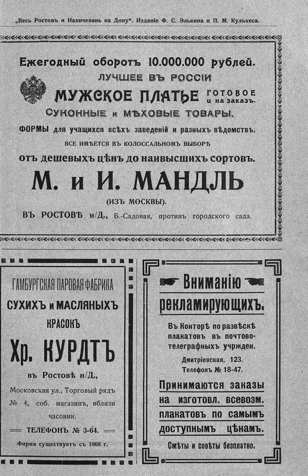

Лист источника 599
Скан

Распознанный текст
„Весь Ростовъ и Нахичевань на Дону“. Изданіе Ф. С. Элькина и П. М. Кулькеса.
Ежегодный оборотъ 10.000.000 рублей.
ЛУЧШЕЕ ВЪ РОССІИ
МУЖСКОЕ ПЛАТЬЕ ГОТОВОЕ
и на заказъ.
СУКОННЫЕ и МѢХОВЫЕ ТОВАРЫ.
ФОРМЫ для учащихся всѣхъ заведеній и разныхъ вѣдомствъ.
ВСЕ ИМѢЕТСЯ ВЪ КОЛОССАЛЬНОМЪ ВЫБОРѢ
отъ дешевыхъ цѣнъ до наивысшихъ сортовъ.
М. и И. МАНДЛЬ
(ИЗЪ МОСКВЫ).
ВЪ РОСТОВѢ н/Д., Б.-Садовая, противъ городского сада.
ГАМБУРГСКАЯ ПАРОВАЯ ФАБРИКА
СУХИХЪ и МАСЛЯНЫХЪ
КРАСОКЪ
Хр. КУРДТЪ
въ Ростовѣ н/Д.,
Московская ул., Торговый рядъ
№ 4, соб. магазинъ, вблизи
часовни.
ТЕЛЕФОНЪ № 3-64.
Фирма существуетъ съ 1868 г.
Вниманію
рекламирующихъ.
Въ Конторѣ по развѣскѣ
плакатовъ въ почтово-
телеграфныхъ учрежден.
Дмитріевская, 123.
Телефонъ № 18-47.
Принимаются заказы
на изготовл. всевозм.
плакатовъ по самымъ
доступнымъ цѣнамъ.
Смѣты и совѣты безплатно.